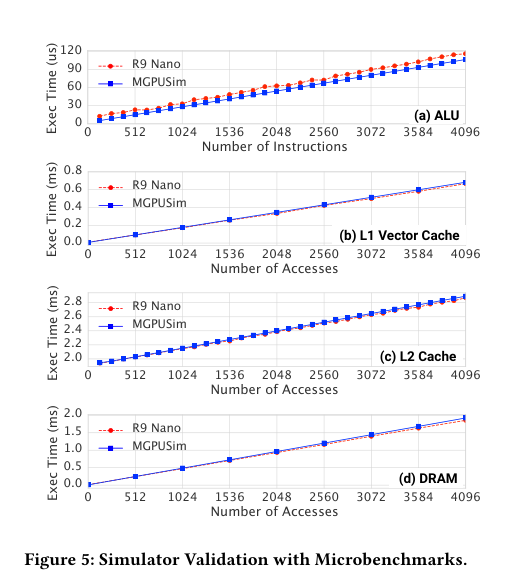
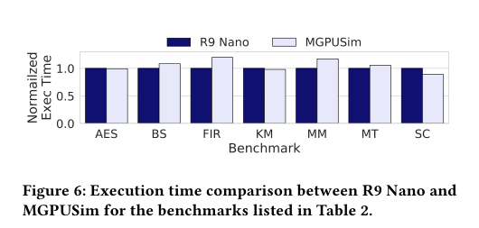
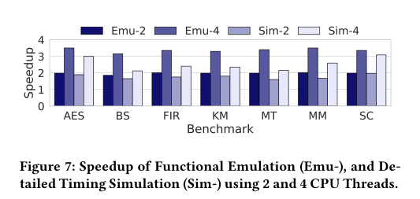
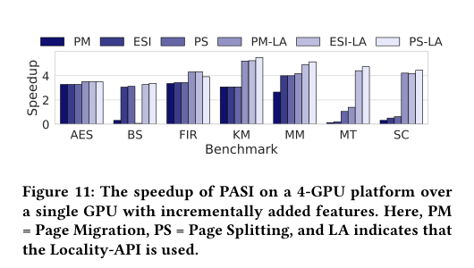

← Daily Papers
本报告由大模型自动生成，可能存在理解、归纳或数据转述错误；请以原论文为准。
MGPUSim Yifan Sun, Trinayan Baruah, Saiful A. Mojumder, Shi Dong, Xiang Gong, Shane Treadway, Yuhui Bao, Spencer Hance, Carter McCardwell, Vincent Zhao, Harrison Barclay, Amir Kavyan Ziabari, Zhongliang Chen, Rafael Ubal, José Luis Abellán, John Kim, Ajay Joshi, David Kaeli · Proceedings of the 46th International Symposium on Computer Architecture · 2019 · 原文 · PDF
报告模型：gemini-3.1-pro-preview / high
这是一篇发表于计算机体系结构顶级会议 ISCA 2019 的论文，题为《MGPUSim: Enabling Multi-GPU Performance Modeling and Optimization》（MGPUSim：赋能多 GPU 性能建模与优化）。
文章的核心脉络是：应用需求暴增导致单 GPU 算力触顶 → → → → →
以下是按论文逻辑章节的详细拆解与说明：
1. 介绍 (Introduction) 与背景 (Background)
1.1 问题背景：多 GPU 时代的到来与仿真工具的缺失
随着深度学习（如 DNN）和大数据分析的爆发，单个 GPU 的算力和内存已经无法满足需求。由于 CMOS 制造工艺的物理和成本限制，我们无法无限增大单块 GPU 的芯片面积（Die Size）。因此，工业界（如 NVIDIA 的 DGX 系统）开始将多个 GPU 集成到一个平台上（即多 GPU 系统）。
然而，多 GPU 系统面临严重的通信和内存管理瓶颈 （CPU-GPU 以及 GPU-GPU 之间的数据同步开销极大）。为了研究如何打破这些瓶颈，计算机架构师需要架构仿真器 (Architectural Simulator) 来模拟尚未造出的硬件。但现有的开源工具（如 GPGPU-Sim, Multi2Sim）都是为单 GPU 设计的，不仅模拟的指令集老旧，而且内部代码耦合严重，难以扩展。更致命的是，这类传统仿真器速度极慢（模拟真实世界 2 秒钟的执行可能需要跑十几天），根本无法用于模拟复杂的多 GPU 系统。
1.2 概念定义与系统全貌
在介绍仿真器前，需要建立理解本文所需的系统全貌。【背景补充】 ：
ISA (Instruction Set Architecture, 指令集架构) ：软件和硬件之间的接口规范。本文基于 AMD 的 GCN3 (Graphics Core Next 3) ISA 进行建模。多 GPU 的两种编程模型 (Multi-GPU Models) ：这是系统软件层面的设计选择。
离散模型 (Discrete Model) ：程序员在代码里能看到系统里有 4 块独立的 GPU（例如标号为 0, 1, 2, 3），需要手动把数据和计算分配给它们。它的优点是控制精确，缺点是编程极度困难。统一模型 (Unified Model) ：系统通过底层软件把 4 块 GPU 伪装成 1 块“巨大”的 GPU 暴露给程序员。优点是原有的单 GPU 代码可以直接跑，缺点是硬件会在底层盲目地跨 GPU 搬运数据，导致极高的互联延迟，性能扩展性差。
RDMA (Remote Direct Memory Access) ：一种允许一块 GPU 直接读写另一块 GPU 内存的技术，无需 CPU 参与。本文依靠它实现 GPU 间的通信。
1.3 现代仿真器的设计原则 (Simulator Design Requirements)
为了克服前人的缺陷，作者为 MGPUSim 确立了五个核心设计约束：
扩展无需修改 (DR-1) ：添加新组件不应引发系统代码大改。拒绝“魔法” (DR-2) ：组件之间不能直接读取对方的内部变量（例如内存控制器不能直接调用缓存的 get() 函数），必须通过发送“请求包”来通信。这强制模拟了真实硬件中的物理连线和通信延迟。携带时间戳的数据流 (DR-3) ：数据流和时间计算不能分离，值必须在系统里真实传递。并行模拟并行硬件 (DR-4) ：真实硬件（如 64 个计算单元）是同时工作的，仿真器也应该利用现代 CPU 的多线程技术（如 4 核 8 线程）来并行处理这些并发事件。避免空转打点 (DR-5) ：采用事件驱动（Event-Driven）而非每周期轮询（Tick）。如果一个内存请求需要 300 个周期，仿真器直接在 300 周期后排定一个唤醒事件，跳过中间的无用计算。
2. MGPUSim 仿真器设计 (MGPUSim)
为了满足上述要求，作者使用 Go 语言 开发了 MGPUSim。选择 Go 的原因是其原生的并发支持（Goroutines）可以极低开销地实现多线程模拟（对应 DR-4）。
2.1 仿真器架构
整个仿真器分为四个抽象层次：事件驱动引擎 (Event Engine) 负责按时间顺序触发事件；组件 (Components) 代表硬件实体（如缓存、计算单元）；连接 (Connections) 是组件间的物理总线；钩子 (Hooks) 用于在不改变系统状态的前提下收集性能数据。基于这种极度解耦的设计，组件之间完全靠标准化协议通信，这使得后续替换或魔改硬件结构变得异常简单（支持了后文的设计研究 2）。
2.2 硬件建模 (GPU Modeling)
MGPUSim 忠实还原了 AMD GCN3 架构的组成部分：
指令分发层 ：包含命令处理器 (CP) 和异步计算引擎 (ACE)，负责从驱动接收任务并派发给底层的计算单元。计算单元 (CU, Compute Unit) ：GPU 的算力核心。每个 CU 包含标量/矢量寄存器 (SGPRs/VGPRs)、局部数据共享区 (LDS)、以及 4 个拥有 16 个通道的 SIMD（单指令多数据）执行单元。这意味着一个 CU 每周期可并行执行 64 个操作。内存层级 ：从 CU 往下，依次连接 L1 缓存、L2 缓存和 DRAM 内存控制器。地址翻译由 TLB（翻译后备缓冲器）负责。跨 GPU 的通信则通过挂载在内部总线上的 RDMA 引擎，经过外部互联网络（如 PCIe 16 GB/s
3. 验证与性能评估 (Methodology & Validation)
作者在配备两块真实 AMD R9 Nano GPU 的硬件平台上收集数据，以此作为“真理（Ground Truth）”来验证仿真器的准确性。
准确性验证 (Fig. 5 & Fig. 6) ：作者编写了 57 个微基准测试（Microbenchmarks，专门压榨 ALU 或某一级缓存的代码）。在图 5 中，仿真器的耗时曲线与真实硬件几乎完美重合。在跑完整应用（Full benchmarks，包含矩阵乘法、AES 加密等）时，仿真器的平均误差仅为 5.5 % 20 % 
Figure 5 · 原文 PDF 第 7 页 
Figure 6 · 原文 PDF 第 7 页 仿真速度 (Fig. 7) ：这是本文的一大亮点。通过保守并行的事件驱动机制（保证时序绝对准确的前提下并行处理不冲突的事件），在 4 线程 CPU 上，MGPUSim 达到了约 27 16.5 33.8 
Figure 7 · 原文 PDF 第 7 页
为了展示 MGPUSim 能做什么，作者开展了以下两个设计研究。注意，现有的传统仿真器因为代码耦合，几乎无法构建这种多 GPU 拓扑。
4. 设计研究 1：软件层面的 Locality API (Design Study 1)
4.1 问题背景与设计选择
正如前面提到的，多 GPU 系统中，“离散模型”性能好但难写，“统一模型”好写但性能差（互联网络被大量跨 GPU 数据请求塞满）。作者希望通过软件 API 的方式找到一个折中方案 ：保留统一模型下单个大 GPU 的抽象，但允许程序员利用应用领域的先验知识，提示硬件“这段数据和这个计算应该放在一起”。
4.2 API 设计与实现
作者提出了三个扩展 API（基于宿主机驱动层面实现）：
GPU 发现 API ：让程序能感知到当前有一个宏观的统一 GPU (UGPU)，以及其内部包含的几个独立 GPU (IGPU)。内存放置 API (Memory Placement API) ：允许程序员显式干预操作系统的页表 (Page Table) 。【背景补充】 ：现代计算机通过页表将虚拟地址映射到物理内存。通过修改页表，程序员可以强制将某段虚拟内存（例如矩阵的某几行）映射到指定的 IGPU 的物理 DRAM 上。计算放置 API (Compute Placement API) ：允许指定某个具体的 IGPU 去执行特定的运算工作组。
只要让分配给 IGPU 0 的计算任务，正好去读写映射在 IGPU 0 物理内存上的数据，就可以完美消除跨 GPU 的 PCIe 流量。在 MGPUSim 中实现这个想法极其简单，只需用几十行代码重连一下 ACE 任务分发器的连线，并替换一个驱动组件即可。
4.3 评估结果 (Fig. 9)
作者对比了单 GPU、统一 4-GPU、单体 4-GPU (Monolithic, 一种理论上性能完美但现实中因芯片面积 > 2000 mm 2 ，以及开启 Locality API 的 4-GPU。结果显示，对于像 AES 加密这种数据完全可分割的应用，Locality API 彻底清零了跨 GPU 流量；整体而言，Locality API 比原始的统一 4-GPU 架构带来了平均 1.6 ×
5. 设计研究 2：硬件层面的 PASI (Design Study 2)
5.1 问题背景：纯硬件如何解决数据局部性问题？
Locality API 的局限在于它依然需要程序员去改代码。如果我们直接拿一个未经优化的单 GPU 程序放到多 GPU 平台上跑，硬件能否自动把数据搬运到最合适的 GPU 上？
现有的“统一模型”默认使用直接缓存访问 (DCA)：发生缺失时，硬件只通过 PCIe 跨卡抓取 64
5.2 PASI 的递进式设计逻辑
作者提出了一种名为 PASI (Progressive Page Splitting Migration, 渐进式页面分裂迁移) 的纯硬件内存管理架构。它是通过三个设计机制层层递进解决问题的：
页面迁移 (Page Migration, PM) ：
机制 ：不再跨卡搬运 64 B 4 KB 局限 ：如果多个 GPU 需要同时读取同一个页（Multiple Read 模式），这个页就会在几个 GPU 之间疯狂来回迁移（乒乓效应），导致性能甚至不如单 GPU。
纯缓存架构与 ESI 协议 (Cache-Only Memory Architecture, COMA) ：
机制 ：为了解决只读共享问题，作者把 GPU 的 DRAM 当作巨型缓存来用，允许同一页数据同时存在于多个 GPU 中。作者引入了 ESI 缓存一致性协议 ：E (Exclusive) 表示该 GPU 独占此页且可写；S (Shared) 表示多 GPU 共享此页，只读；I (Invalid) 表示该页已失效。局限 ：如果 GPU A 要写页面的上半部分，GPU B 要写页面的下半部分（这种现象叫伪共享 False Sharing ），为了保证写的排他性 (E 状态)，整个页面依然会在 A 和 B 之间不断相互使效并来回迁移。
页面分裂 (Page Splitting, PS) ：
机制 ：这是 PASI 的最终形态。系统初始化时分配大页（如 2 MB 把这个页对半分裂 (Split in half) ，只迁移被请求的那一半。分裂过程可以一直持续到最小页尺寸（如 1 KB
5.3 评估结果 (Fig. 11)
作者在仿真器中插入了新的页面迁移控制器 (PMC)，再次体现了仿真器的模块化优势。图 11 揭示了各个机制的贡献：

Figure 11 · 原文 PDF 第 11 页
单纯的页面迁移 (PM) 会让某些发生伪共享的程序（如 BS, MT）比单 GPU 还要慢达 4 ×
加入 ESI 协议后，修复了只读共享导致的问题。
完整体 PASI (PS 柱状图) 结合了大页的低翻译延迟和小页抵抗伪共享的能力，相比基础的 DCA 统一 4-GPU 架构，实现了 2.65 ×
6. 全文总结与主线约束
贯穿全文的主线 ：计算机架构研究严重依赖仿真工具。MGPUSim 解决了过往仿真器慢、老、耦合深的问题。利用这个工具，本文不仅从软件层面（Locality API，需要程序员介入以实现零开销） ，也从硬件层面（PASI，对程序员透明，依靠大页切小页和 ESI 协议对抗乒乓效应） ，成功缓解了多 GPU 系统中最棘手的数据通信瓶颈。
关键假设与局限性 (不可过度推广之处) ：
拓扑假设 ：仿真验证和设计研究均基于共享一条 PCIe 总线（或类似总线结构）的拓扑。如果是像 NVIDIA NVSwitch 那样的点对点 Mesh 或环形拓扑，互联瓶颈的表现形式可能会改变，IOMMU 随机选择数据发送者的策略也可能需要更换为就近选择。指令集绑定 ：虽然仿真器设计是领域无关的，但其核心执行模型强绑定于 AMD GCN3 及其特有的 Wavefront (64 线程) 执行模式。结论迁移到具有不同线程束大小（如 NVIDIA 的 32 线程 Warp）的架构时需谨慎。物理极限制约 ：文章中作为对照组的 Monolithic 单体大 GPU 是受限于当前硅片制造工艺（Die Size 极限）无法造出来的，它的存在仅仅是为了提供一个消除互联延迟后的“理论上限”，并非实际可行的设计方案。